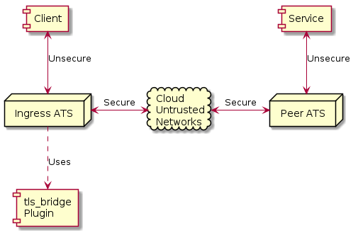

TLS Bridge¶
This plugin is used to provide secured TLS tunnels for connections between a Client and a Service via two gateway Traffic Server instances. By configuring the Traffic Server instances the level of security in the tunnel can be easily controlled for all communications across the tunnels.
Description¶
The tunnel is sustained by two instances of Traffic Server.

The ingress Traffic Server accepts a connection from the Client. This connection gets intercepted by the
TLS Bridge plugin inside Traffic Server. The plugin then makes a TLS connection to the peer Traffic Server using the
configured level of security. The original request from the Client to the ingress Traffic Server is then sent
to the peer Traffic Server to create a connection from the peer Traffic Server to the Service. After this the
Client has a virtual circut to the Service and can use any TCP based communication (including TLS).
Effectively the plugin causes the connectivity to work as if the Client had done the CONNECT
directly to the peer Traffic Server. Note this means the DNS lookup for the Service is done by the peer Traffic Server,
not the ingress Traffic Server.
The plugin is configured with a mapping of Service names to peer Traffic Server instances. The Service names are URLs which will in the original HTTP request made by the Client after connecting to the ingress Traffic Server. This means the FQDN for the Service is not resolved in the environment of the peer Traffic Server and not the ingress Traffic Server.
Implementation¶
The TLS Bridge plugin uses TSHttpTxnIntercept to gain control of the ingress Client session.
If the session is valid then a separate connection to the peer Traffic Server is created using
TSHttpConnect.
After the ingress Traffic Server connects to the peer Traffic Server it sends a duplicate of the Client CONNECT
request. This is processed by the peer Traffic Server to connect on to the Service. After this both Traffic Server
instances then tunnel data between the Client and the Service, in effect becoming a transparent
tunnel.
The overall exchange looks like the following:
![@startuml
box "Client Network" #EEFFEE
actor Client
entity "User Agent\nVConn" as lvc
participant "Ingress ATS" as ingress
entity "Upstream\nVConn" as rvc
end box
box "Corporate Network" #EEEEFF
participant "Peer ATS" as peer
database Service
end box
Client -> ingress : TCP or TLS connect
activate lvc
Client -> ingress : HTTP CONNECT
ingress -> lvc : Intercept Transaction
ingress -> peer : TLS connect
activate rvc
note over ingress,peer : Secure Tunnel
ingress -> peer : HTTP CONNECT
note over peer : DNS for Service is\ndone here.
peer -> Service : TCP Connect
note over Client, Service : At this point data can flow between the Client and Server\nover the secure link as a virtual connection, including any TLS handshake.
Client <--> Service
lvc <-> ingress : <&arrow-thick-left> Move data <&arrow-thick-right>
ingress <-> rvc : <&arrow-thick-left> Move data <&arrow-thick-right>
note over ingress : Plugin explicitlys moves this data.
@enduml](_images/plantuml-62dbdeea7c9421c00d00042765db76085b401d4b.png)
A detailed view of the plugin operation.
![@startuml
ReadRequestHdr : Check for ""CONNECT""
ReadRequestHdr : =====
ReadRequestHdr : Find Peer for Service.
Intercept : Intercept Client Transaction.
Intercept : =====
Intercept : Initialize Bridge Context.
Accept : Initialize ""VConn"" data.
Accept : =====
Accept : Create internal transaction.
Accept : =====
Accept : Set up Client side tunnel.
Accept : =====
Accept : ""CONNECT"" to Peer via internal transaction.
Tunnel : Move data.
state "Flow To Peer" as FlowToPeer
FlowToPeer : Move data from Client ""TSIOBufferReader""\nto Peer ""TSIOBuffer"".
FlowToPeer : =====
FlowToPeer : Reenable VIOs
state "Flow To Client" as FlowToClient
FlowToClient : Move data from Peer ""TSIOBufferReader""\nto Client ""TSIOBuffer"".
FlowToClient : =====
FlowToClient : Reenable VIOs
state "Wait For Peer Response" as WaitForPeerResponse {
WaitForStatusCode : Parse for status code.
WaitForResponseEnd : Parse for double newline.
BadStatus : Set error data\nin Client Response.
PeerReady : Update Client Response.
PeerReady : =====
PeerReady : Set up peer tunnel.
PeerReady : =====
PeerReady : Start Tunneling.
[*] --> WaitForStatusCode
WaitForStatusCode --> WaitForResponseEnd
WaitForStatusCode --> BadStatus
BadStatus --> [*]
WaitForResponseEnd --> PeerReady
PeerReady --> [*]
}
[*] --> ReadRequestHdr : ""CONNECT"" Service
ReadRequestHdr --> [*] : Not matched.
ReadRequestHdr --> Intercept
Intercept --> Accept : ""TS_EVENT_NET_ACCEPT""
Accept -r-> WaitForPeerResponse
WaitForPeerResponse --> WaitForPeerResponse : ""TS_EVENT_VCONN_READ_READY""
WaitForPeerResponse --> Tunnel : 200 OK
WaitForPeerResponse -u-> [*] : Peer connect failure
Tunnel --> FlowToClient : ""TS_EVENT_VCONN_READ_READY""\nPeer VIO
FlowToClient --> Tunnel
Tunnel --> FlowToPeer : ""TS_EVENT_VCONN_READY_READY""\nClient VIO
FlowToPeer --> Tunnel
Tunnel -right-> Shutdown : ""TS_EVENT_VCONN_EOS""
Shutdown : Close Client VConn
Shutdown : =====
Shutdown : Close Upstream VConn
@enduml](_images/plantuml-76170b67ed8103a714191e02da81d4e81f1c9f41.png)
A sequence diagram focusing on the request / response data flow. There is a NetVConn for the
connection to the Peer Traffic Server which is omitted for clarity.
- Blue dotted lines are request or response data
- Green lines are network connections.
- Red lines are programmatic interactions.
- Black lines are hook call backs.
The 200 OK sent from the Peer Traffic Server is parsed and consumed by the plugin. An non-200 response
means there was an error and the tunnel is shut down. To deal with the Client response clean up the
response code is stored and used later during cleanup.
![@startuml
actor Client
box "Ingress ATS" #EEFFEE
entity "Client\nNetVConn" as uanet
participant "Ingress\nATS" as ingress
entity "Client\nVConn" as uavc
entity "TLS Bridge" as plugin
entity "Peer\nVConn" as peervc
end box
box "Peer ATS" #EEEEFF
participant "Peer\nATS" as peer
end box
participant Service
Client <-[#green]> ingress : //TCP Connect//
activate uanet
Client -[#blue]-> uanet : <font color="blue">""CONNECT"" Service</font>
uanet -> ingress : //Parse request//
ingress -[#black]> plugin : ""READ_REQUEST_HDR_HOOK""
plugin -> ingress : //TSHttpTxnIntercept()//
ingress -> uavc : //Create//
activate uavc
uanet -[#blue]-> ingress : <font color="blue">""CONNECT"" Service</font>
ingress -[#blue]-> uavc : <font color="blue">""CONNECT"" Service</font>
ingress -[#black]> plugin : ""TS_EVENT_NET_ACCEPT""
note right : Client VConn is passed in event data.
plugin -\ ingress : //TSHttpConnect()//
ingress -> peervc : //create//
activate peervc
ingress -/ plugin : //return Peer VConn//
plugin -[#blue]-> peervc : <font color="blue">""CONNECT"" Peer</font>
peervc -> ingress : //parse request//
ingress <-[#green]> peer : //TLS Connect//
ingress -[#blue]-> peervc : <font color="blue">""200 OK""</font>
peervc -[#blue]-> plugin : <font color="blue">""200 OK""</font>
note left
This signals a raw TLS connection
nto the Peer ATS. The response is
parsed and consumed by Plugin.
end note
note over plugin : Plugin switches to byte forwarding.
uavc -[#blue]-> plugin : <font color="blue">""CONNECT"" Service</font>
note left: Original Client Request.
plugin -[#blue]-> peervc : <font color="blue">""CONNECT"" Service</font>
peervc -[#blue]-> peer : <font color="blue">""CONNECT"" Service</font>
peer <-[#green]> Service : //TCP/TLS Connect//
peer -[#blue]-> peervc : <font color="blue">""200 OK""</font>
peervc -[#blue]-> plugin : <font color="blue">""200 OK""</font>
plugin -[#blue]-> uavc : <font color="blue">""200 OK""</font>
uavc -[#blue]-> ingress : <font color="blue">""200 OK""</font>
note left
ATS updates the incoming response based on
local configuration. This means what goes out
to the Client may be different than what the
plugin wrote (forwarded from Peer ATS).
end note
ingress -[#black]> plugin : ""SEND_RESPONSE_HDR_HOOK""
note right : Plugin cleans up response here.
ingress -[#blue]-> uanet : <font color="blue">""200 OK""</font>
uanet -[#blue]-> Client : <font color="blue">""200 OK""</font>
Client <-[#green]> Service : //TCP/TLS Connect//
@enduml](_images/plantuml-d3593ff53c3f0e65a26cfc02746c870f1a829ecb.png)